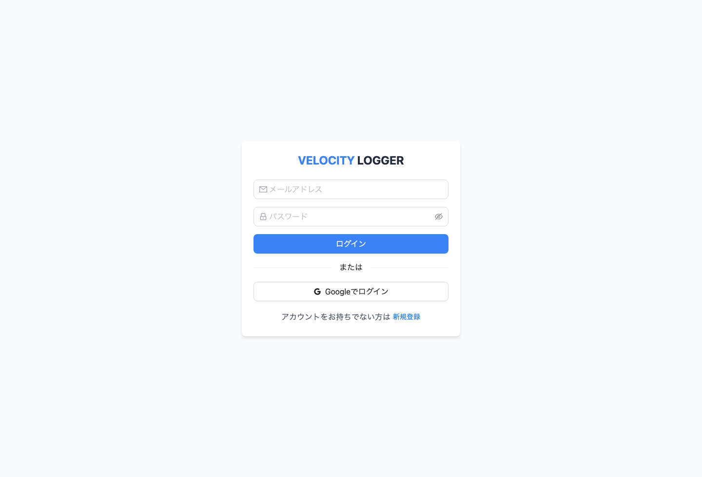
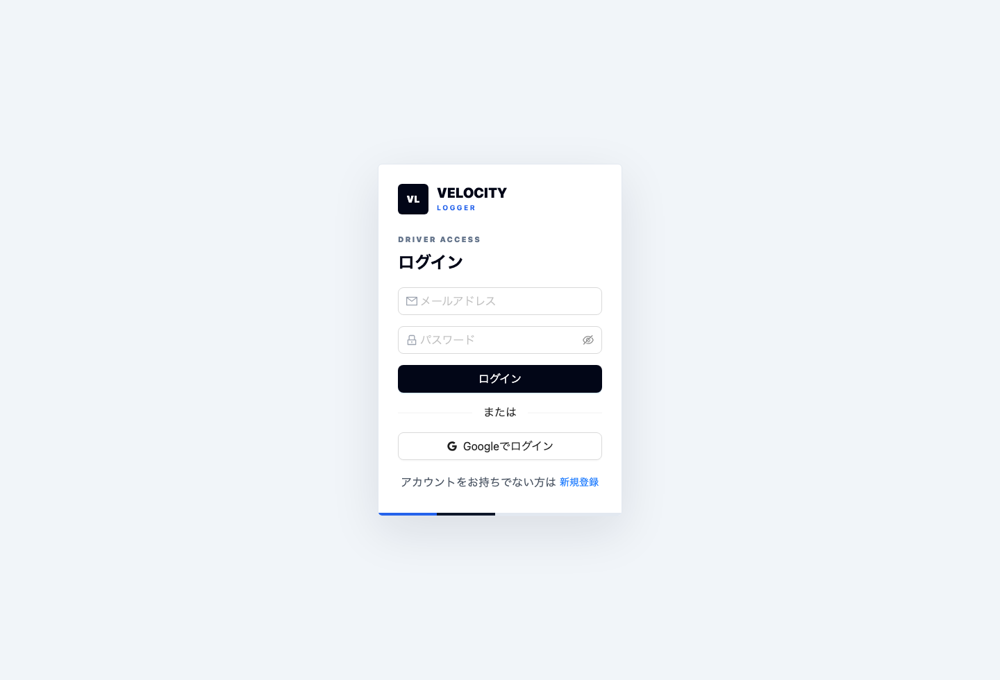
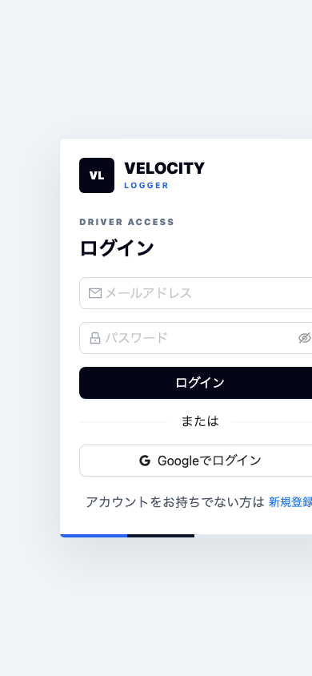

Before 変更前
旧ログインカード

UI Comparison Report
`taste-skill` 導入後の画面更新について、変更前と変更後のスクリーンショットを並べて比較します。 未ログイン環境で安定して再現できる認証画面を主比較対象にしています。



Mobile Check
390 x 844 の headless Chrome で撮影した補助確認です。
比較ページ上では縮小表示し、実ファイルは
docs/ui-comparison-assets/auth-after-mobile.png
に保存しています。